I have had the opportunity to learn how to work with different techniques and softwares, such as Adobe Creative Cloud and Figma, and in different
areas of design and art, such as editorial, graphic, interaction, illustration, animation, and many
others.
Photo Editing
Editorial Design
Illustration
Motion Design
Animation
Video Editing
HTML & CSS
Unity
Processing
UX&UI
Besides the tecnical and software knowledge, I am capable of...
using the internet as a tool of communication, inquiry and research
sense of organisation acquired through group projects and previous experiences
team spirit and communication efficiency
Qualifications
09-09-2020 — Present
Post-graduation in Digital Experience Design
Fine-Arts Faculty, Lisbon University
10-09-2017 — 15-07-2020
Degree level in Communication Design
Fine-Arts Faculty, Lisbon University
2014 — 2017
10.º - 12.º Years (Secondary education), Fine-Arts
Escola Secundária Diogo Gouveia, Agrupamento n.º1 de Beja
Portfolio
Web design, Storytelling
f(x)=4x
Inspired by otto e mezzo, a film by Federico Fellini, four different characters were created and
explored creatively through an immersive and interactive online experience. The website is
divided into two sections: the main page (with more information about the project); and the
interactive fiction itself.
Web Design
Digital Crew
Based on designers' stereotypes, Digital Crew is a simple, funny quiz, where the
user is taken through a hypothetical first day of a new job and has to complete
their tasks. Depending on their choices, the user would be inserted into one of five
groups, where, once the results are in, they could explore the possible job titles in
that area.
Interactive Design
ATTACH
ATTACH is an application that seeks to connect artists from around the world.
Based on the concept of pen-pals, the main goal is to send what has been called
package to another artist so that you can share knowledge and/or work.
Animation
3018 Geophysical Map
Imagine a world where there is no free will, where everyone is the same and do
the same things. When you are the only one who is concious of their choices, there
is a risk that the others could turn against you.
This digital animation is a reflexion of that futuristic world, placed in the year 3018,
showing how the society works with a touch of irony, also brought by the background music.
Web Design
CATALYST
CATALYST is the name of a magazine designed for a university project which also
had an online presence through a website, with aditional contents.
CATALYST aim was to show examples of Design Activism and their impact in society
through the years and now, being its first issue about femvertising and equality.
Graphic and Motion Design
“Must we no longer
believe in words?”
In order to highlight the expression of the futuristic manifestos, the phrase written
by Tristan Tzara on the Dada Manifesto emphasizes that the written meaning is
not always what it appears to be. This composition is interpreted as using a set of
letters, both in repetition, that make them stop looking like words and more like
sounds, with the black stripes that hide part of them (as if it were the meaning) and
also with the M / W comparison that shows that not everything is what it seems.
About
I am Joana Corvo, a Communication Designer and a post-graduate student in Digital Experience Design at
the Fine Arts Academy, Lisbon University. Through the past years, I have been working on projects that
have made me grow as a designer, as well as a person.
Besides design and art, my passions envolve music and reading. On my free time you can also catch me
either binge watching random videos on tecnology (right now I am loving to learn about 3D printing!) or
crocheting.
Contact
If you found something interesting, or just want to talk about the latest Bring Me The Horizon album, I
am always available for a chat!
 
